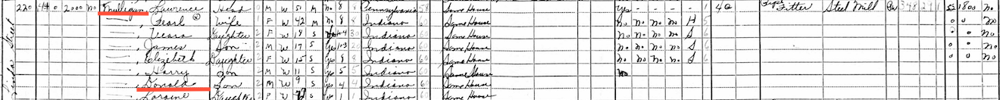
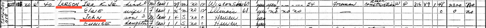
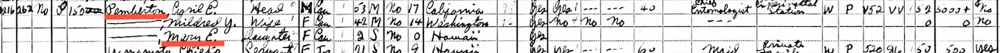

During spring term of my freshman year at the University of Oregon, I took a research class called “Writing the Family, Writing the Self.” In this class, we researched our ancestry for an entire term and created personal websites where we catalogued all of the research that we did.
If you know the full names of each of your grandparents (including your grandmothers' maiden names), the US census can be an extremely valuable tool to kickstart your genealogical research. For instance, in the ancestral charts above you can see that my ancestry can be broken down into four branches, one for each of my grandparents. In my family, my four branches are 1) the Grapsas branch, 2) the Mulligan branch, 3) the Larson branch, and 4) the Pemberton branch.
Records from the US census have a 72-year rule, which means that census records do not become publicly available until 72 years after its "Census Day." This means that in 2020 when I started my research, the most recent publicly available census was the 1940 census. However, 2022 was a big year in geneaology as the 1950 census also became available!
I started with the 1940 census, and with each of my grandparents names. Finding thier names when they were children in the census records meant that they were living in the households of their parents. This makes going back a generation, and finding your grandparents parents in the census, even if you dind't previously know their names, possible.
Of course, for the women in your ancestry, the census will not tell you a woman's maiden name unless they are unmarried or also children living with their parents. This makes using other types of records like death and marriage certificates, or even interviewing your family members, necessary.
If census surveyors recorded information correctly and thoroughly, these population schedules documented information on the house number, street name, city, county, and state for each household documented in the census for each year. I used this information to geocode each household.



The Power of Mapping
A vital part of genealogical research is understanding the flow of how people migrate and move (or don’t move), which makes the concept of “place” vital to understanding your ancestry. In a way, family trees are simplified maps... but actually mapping the information provides you with context and a with a physical way to experience the lives your ancestors lived. Maps are appropriate vehicles for genealogical data not only during the research phase, but also as a way to present and share the information with other family members.
The maps below explore the spatial and temporal distribution of my genealogy as recorded in US Census Bureau Population Schedules from 1900 to 1940 through 6 different maps.
Please use the first five maps below to go on a guided tour of the data available for each household during the census year it is exploring. To begin the tour, click the button beaneath the map labeled "Fly to the next household!" To read more information, click the marker situated in the middle of the map, and click anywhere to close the pop-up. Click the "Fly to the next household" button to automatically zoom to another household.
Please use the last map labeled 'Distribution of Maternal vs Paternal Family 1900-1940' to explore all 40 years of census data (from 1900 to 1940).
Sixteenth Census: 1940
Instructions: Begin a tour of each household by clicking the button beaneath the map labeled "Fly to the next household!" To read more information, click the marker situated in the middle of the map, and drag the map view to scroll through the popup. Click anywhere to close the pop-up. Click the "Fly to the next household" button to automatically zoom to another household.
The 1940 and 1930 US Censuses were arguably the most comprehensive US census surveys that had ever been distributed at that point. For instance, while previous surveys usually asked if a home was rented or owned, the 1940 and 1930 survey recorded the value of homes, if owned, or monthly rent prices, if rented. They also recorded extra occupation and employment information like an individual's income in the previous year. The 1940 census was particularly unique in that it recorded the highest grade of school completed for every individual.
Fifteenth Census: 1930
Instructions: Begin a tour of each household by clicking the button beaneath the map labeled "Fly to the next household!" To read more information, click the marker situated in the middle of the map, and click anywhere to close the pop-up. Click the "Fly to the next household" button to automatically zoom to another household.
The 1930 census was particularly unique in that it recorded all individuals' mother tongue language, whether they were able to read and write, year of immigration (where applicable), naturalization status (where applicable), and and veteran status. My favorite fact that this census recorded about each household was whether or not they owned a radio set.
Fourteenth Census: 1920
Instructions: Begin a tour of each household by clicking the button beaneath the map labeled "Fly to the next household!" To read more information, click the marker situated in the middle of the map, and click anywhere to close the pop-up. Click the "Fly to the next household" button to automatically zoom to another household.
The 1920 census was particularly unique in that it recorded the year that individuals who immigrated were naturalized. It also recorded the mother tongue and birthplace of each individual's parents
Thirteenth Census: 1910
Instructions: Begin a tour of each household by clicking the button beaneath the map labeled "Fly to the next household!" To read more information, click the marker situated in the middle of the map, and click anywhere to close the pop-up. Click the "Fly to the next household" button to automatically zoom to another household.
The 1910 census was particularly unique in that it recorded the year that individuals who immigrated were naturalized. It also recorded the mother tongue and birthplace of each individual's parents
Twelfth Census: 1900
Instructions: Begin a tour of each household by clicking the button beaneath the map labeled "Fly to the next household!" To read more information, click the marker situated in the middle of the map, and click anywhere to close the pop-up. Click the "Fly to the next household" button to automatically zoom to another household.
The 1900 census was focused on information related to a person's immigration and naturalization status, as well as their ability to read, write, and speak English.
Distribution of Maternal vs Paternal Family 1900-1940
This map does not accurately demonstrate ALL of the locations where my family lived during this period for a couple of reasons. The first reason is that these census surveys were only conducted every 10 years, which means they can only capture information for these particular survey years, and not those in between. Another reason is that I have not been able to track down every record for every family for every year. There are certain individuals that I know were living in the US during this time through immigration records, but which I cannot find on census records. This could be due to the surveyor recording names and information incorrectly, or individuals not participating in the census.
The Importance of Genealogy
Learning about your ancestors, finding them on the census and in other documents, and rooting through boxes of old pictures and albums to put a face to a name is extremely rewarding, exciting, and special.
All photographs are in my family's personal collection. The Census data was accessed through Ancestry, and was originally recorded by the US Census Bureau. These records are now in the public domain due to the 72 year rule.